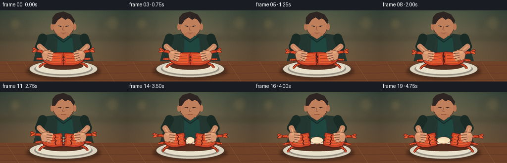
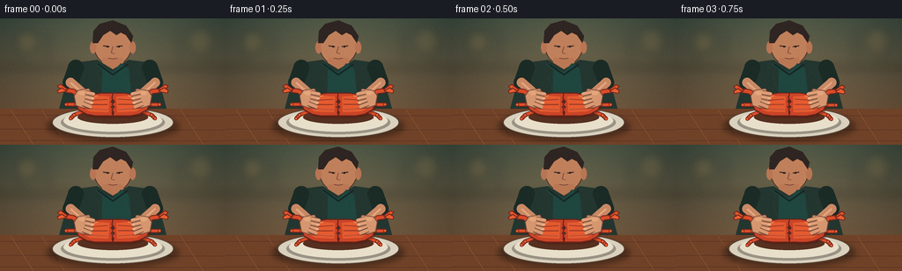

CODING AGENTS AS PIXEL WORLD MODELS
traex/GPT-5.6-Sol · motion_rationality_0014
点击播放 · 原生 RGB 像素
逐轮保存的候选
回放视频、检查图与代码变化。
每份候选均可单独播放。实际图片检查记录在下方工具轨迹中。
候选 01播放与检查图
点击播放 · 原生 RGB 像素


展开代码变化
--- 上一保存版本
+++ 本次保存版本
@@ -0,0 +1,240 @@
+from pathlib import Path
+import math
+import numpy as np
+from PIL import Image, ImageDraw, ImageFilter
+import artifact_io
+
+# Procedural, hand-illustrated close-up animation. All geometry is drawn at 4x
+# resolution and downsampled for clean antialiased edges.
+W, H, N, S = 256, 144, 20, 4
+rng = np.random.default_rng(14)
+
+def sc(v): return int(round(v*S))
+def box(b): return tuple(sc(x) for x in b)
+def pts(p): return [(sc(x),sc(y)) for x,y in p]
+def ease(x):
+ x=max(0,min(1,x)); return x*x*(3-2*x)
+def rotpt(p, c, a):
+ x,y=p; cx,cy=c; q=math.radians(a); co,si=math.cos(q),math.sin(q)
+ return (cx+(x-cx)*co-(y-cy)*si, cy+(x-cx)*si+(y-cy)*co)
+def poly(draw, p, fill, outline=None, width=1):
+ draw.polygon(pts(p), fill=fill)
+ if outline: draw.line(pts(p+[p[0]]), fill=outline, width=sc(width), joint='curve')
+def ell(draw,b,fill,outline=None,width=1): draw.ellipse(box(b),fill=fill,outline=outline,width=sc(width) if outline else 1)
+def line(draw,p,fill,width,joint='curve'): draw.line(pts(p),fill=fill,width=sc(width),joint=joint)
+
+def capsule(draw, a,b,width,fill):
+ line(draw,[a,b],fill,width)
+ r=width/2
+ ell(draw,(a[0]-r,a[1]-r,a[0]+r,a[1]+r),fill)
+ ell(draw,(b[0]-r,b[1]-r,b[0]+r,b[1]+r),fill)
+
+def shell_piece(layer, side, center, angle, cracked, frame):
+ d=ImageDraw.Draw(layer)
+ cx,cy=center
+ if side<0:
+ base=[(14,-13),(1,-13),(-11,-11),(-22,-7),(-28,-1),(-25,6),(-16,11),(-5,13),(14,13),
+ (13,9),(15,6),(12,3),(15,0),(12,-3),(15,-7)]
+ else:
+ base=[(-14,-13),(-1,-13),(11,-11),(22,-7),(28,-1),(25,6),(16,11),(5,13),(-14,13),
+ (-13,9),(-15,6),(-12,3),(-15,0),(-12,-3),(-15,-7)]
+ world=[rotpt((cx+x,cy+y),(cx,cy),angle) for x,y in base]
+ # shell shadow
+ sh=[(x+1.5,y+2.5) for x,y in world]
+ poly(d,sh,(82,30,20,90))
+ poly(d,world,(203,69,39,255),(103,34,27,255),1.2)
+ # warm central shell panels, highlight ridge
+ inner=[]
+ if side<0: inner=[(10,-9),(-1,-10),(-12,-8),(-20,-3),(-20,4),(-12,8),(9,9)]
+ else: inner=[(-10,-9),(1,-10),(12,-8),(20,-3),(20,4),(12,8),(-9,9)]
+ iw=[rotpt((cx+x,cy+y),(cx,cy),angle) for x,y in inner]
+ poly(d,iw,(229,91,48,255))
+ # segmented fan grooves
+ for yy in (-6,0,6):
+ if side<0: p=[(cx-20,cy+yy*.72),(cx+8,cy+yy)]
+ else: p=[(cx+20,cy+yy*.72),(cx-8,cy+yy)]
+ p=[rotpt(x,(cx,cy),angle) for x in p]
+ line(d,p,(158,49,34,210),1)
+ # small reflected highlights
+ hp = [(-12,-8),(-3,-10)] if side<0 else [(3,-10),(12,-8)]
+ hp=[rotpt((cx+x,cy+y),(cx,cy),angle) for x,y in hp]
+ line(d,hp,(255,151,91,220),1.4)
+ # dark jagged broken edge after split
+ if cracked:
+ seam=[(cx+side*0.2,cy-11),(cx-side*2,cy-7),(cx+side*1.3,cy-3),(cx-side*1.7,cy+1),(cx+side*1.2,cy+5),(cx-side*.5,cy+10)]
+ seam=[rotpt(x,(cx,cy),angle) for x in seam]
+ line(d,seam,(91,29,24,255),1.8)
+
+def transformed(center, angle, local):
+ return [rotpt((center[0]+x,center[1]+y),center,angle) for x,y in local]
+
+def draw_legs(d, center, angle, side, spread=1):
+ # Three coherent jointed cooked legs attached to each body half.
+ sg=side
+ roots=[(sg*14,-7),(sg*20,-1),(sg*17,7)]
+ ends=[(sg*35,-16),(sg*39,0),(sg*34,16)]
+ for i,(r,e) in enumerate(zip(roots,ends)):
+ mid=(sg*(26+i*2), (-12,0,12)[i])
+ path=transformed(center,angle,[r,mid,e])
+ line(d,path,(108,35,26,255),5.0)
+ line(d,path,(220,79,42,255),3.0)
+ for p in path[1:]: ell(d,(p[0]-2,p[1]-2,p[0]+2,p[1]+2),(232,94,49,255),(117,37,27,255),.7)
+
+def draw_claw(d, center, angle, side):
+ sg=side
+ arm=transformed(center,angle,[(sg*20,-7),(sg*31,-15),(sg*39,-16)])
+ line(d,arm,(113,36,27,255),6)
+ line(d,arm,(218,76,40,255),4)
+ tip=arm[-1]
+ # recognisable pincer with two opposing fingers
+ upper=transformed(center,angle,[(sg*37,-17),(sg*45,-23),(sg*49,-21),(sg*44,-16)])
+ lower=transformed(center,angle,[(sg*38,-15),(sg*48,-13),(sg*49,-16),(sg*44,-19)])
+ poly(d,upper,(224,84,43,255),(111,35,27,255),1)
+ poly(d,lower,(234,94,48,255),(111,35,27,255),1)
+
+def hand(d, center, side, squeeze, angle):
+ # Palm rests beyond outer edge; four curled fingers visibly hook over shell.
+ cx,cy=center; sg=side
+ palm=[(cx-sg*2,cy-11),(cx+sg*11,cy-9),(cx+sg*15,cy-3),(cx+sg*13,cy+8),(cx+sg*4,cy+11),(cx-sg*5,cy+7),(cx-sg*7,cy-2)]
+ palm=[rotpt(p,(cx,cy),angle) for p in palm]
+ poly(d,palm,(214,151,112,255),(120,75,58,255),.9)
+ # knuckle warmth
+ kp=rotpt((cx+sg*6,cy-6),(cx,cy),angle)
+ ell(d,(kp[0]-4,kp[1]-2.3,kp[0]+4,kp[1]+2.3),(229,166,124,255))
+ # curled fingertips crossing the upper shell rim
+ for j,yy in enumerate((-7,-2,3)):
+ start=(cx+sg*(2+j*.5),cy+yy)
+ end=(cx-sg*(7+squeeze*2-j),cy+yy+2)
+ pp=[rotpt(start,(cx,cy),angle),rotpt(end,(cx,cy),angle)]
+ line(d,pp,(116,72,55,255),4.8)
+ line(d,pp,(224,160,120,255),3.4)
+ ep=pp[-1]
+ ell(d,(ep[0]-1.8,ep[1]-1.5,ep[0]+1.8,ep[1]+1.5),(235,174,132,255))
+ # thumb is the opposing grip below the shell
+ pp=transformed((cx,cy),angle,[(sg*5,6),(-sg*5,10)])
+ line(d,pp,(112,68,53,255),6)
+ line(d,pp,(218,153,114,255),4.2)
+ # short nail mark
+ nail=rotpt((cx-sg*7,cy-5),(cx,cy),angle)
+ line(d,[(nail[0]-sg*1.4,nail[1]),(nail[0]+sg*1.2,nail[1]+.2)],(184,123,96,255),.7)
+
+def make_frame(i):
+ t=i/(N-1)
+ # Warm restaurant background with a gentle photographic vignette.
+ yy,xx=np.mgrid[0:H*S,0:W*S]
+ top=np.array([61,75,66.],float); bot=np.array([117,82,57.],float)
+ q=(yy/(H*S-1))[...,None]
+ arr=top*(1-q)+bot*q
+ glow=np.exp(-((xx-W*S*.5)**2+(yy-H*S*.25)**2)/(2*(70*S)**2))[...,None]
+ arr += glow*np.array([25,20,10])
+ vign=np.clip(((xx-W*S/2)/(W*S*.72))**2+((yy-H*S/2)/(H*S*.9))**2,0,1)[...,None]
+ arr-=vign*18
+ img=Image.fromarray(np.uint8(np.clip(arr,0,255)),'RGB').convert('RGBA')
+ bg=Image.new('RGBA',img.size,(0,0,0,0)); bd=ImageDraw.Draw(bg)
+ # soft wall panels, shelf and pendant glows
+ bd.rectangle(box((0,55,256,58)),fill=(47,48,42,100))
+ for x in (22,54,202,234): bd.rectangle(box((x,16,x+2,57)),fill=(45,55,48,60))
+ ell(bd, (18,14,43,39),(244,181,92,28)); ell(bd,(213,10,242,40),(244,181,92,25))
+ bg=bg.filter(ImageFilter.GaussianBlur(sc(5)))
+ img=Image.alpha_composite(img,bg)
+ d=ImageDraw.Draw(img)
+ # Person leaning over their food: head, hair, eyes aimed downward.
+ ell(d,(106,5,150,54),(192,128,91,255),(76,51,42,255),1)
+ # ears and neck
+ ell(d,(102,26,109,40),(185,118,84,255)); ell(d,(147,26,154,40),(185,118,84,255))
+ poly(d,[(117,45),(139,45),(143,61),(113,61)],(186,120,84,255))
+ # hair cap with locks
+ poly(d,[(105,28),(106,14),(113,6),(128,2),(143,8),(151,20),(149,28),(143,19),(137,16),(132,19),(125,14),(117,19),(111,28)],(47,37,34,255))
+ # nose and attentive downward-looking eyes
+ line(d,[(117,31),(124,32)],(67,47,41,255),1.4); line(d,[(132,32),(139,31)],(67,47,41,255),1.4)
+ ell(d,(121,31,123,33),(31,27,24,255)); ell(d,(134,31,136,33),(31,27,24,255))
+ line(d,[(128,32),(126,39),(130,40)],(132,80,63,255),1)
+ line(d,[(123,45),(128,46),(133,45)],(116,65,55,255),1)
+ # torso and apron
+ poly(d,[(81,51),(110,47),(128,58),(146,47),(175,51),(190,107),(66,107)],(36,54,48,255))
+ poly(d,[(106,51),(116,58),(115,106),(151,106),(146,57),(137,51),(128,61)],(31,70,63,255))
+ line(d,[(111,52),(128,64),(145,52)],(20,40,37,255),2)
+ # Table, with broad wood grain.
+ poly(d,[(0,103),(256,103),(256,144),(0,144)],(112,66,40,255))
+ for y0 in (110,126,139): line(d,[(0,y0),(256,y0+1)],(83,48,32,90),.7)
+ for x0 in (12,47,205): line(d,[(x0,104),(x0+26,144)],(145,88,50,55),.6)
+ # plate shadow and ceramic plate
+ shadow=Image.new('RGBA',img.size,(0,0,0,0)); sd=ImageDraw.Draw(shadow)
+ ell(sd,(53,107,203,139),(30,20,16,115)); shadow=shadow.filter(ImageFilter.GaussianBlur(sc(3)))
+ img=Image.alpha_composite(img,shadow); d=ImageDraw.Draw(img)
+ ell(d,(59,101,197,136),(218,210,190,255),(89,72,60,255),1)
+ ell(d,(69,105,187,132),(154,147,133,255)); ell(d,(72,104,184,129),(232,224,203,255))
+ # timing: grip and squeeze, sudden fracture, then controlled pull-apart
+ squeeze=ease((i-1)/7)
+ pull=ease((i-9)/8)
+ gap=30*pull
+ jitter=(math.sin(i*1.7)*0.45*squeeze*(1-pull))
+ twist=(5.0*squeeze*(1-pull))
+ leftc=(114-gap/2,98+jitter); rightc=(142+gap/2,98-jitter)
+ la=-twist-12*pull; ra=twist+12*pull
+ # Arms behind hands/crab, tracking the moving wrists.
+ left_hand=(99-gap/2,91+jitter); right_hand=(157+gap/2,91-jitter)
+ left_elbow=(80-gap*.12,73); right_elbow=(176+gap*.12,73)
+ # sleeve shadows / sleeves / forearms
+ capsule(d,(86,56),left_elbow,18,(27,43,38,255)); capsule(d,(170,56),right_elbow,18,(27,43,38,255))
+ capsule(d,left_elbow,(left_hand[0]-2,left_hand[1]-3),11,(201,137,101,255))
+ capsule(d,right_elbow,(right_hand[0]+2,right_hand[1]-3),11,(201,137,101,255))
+ line(d,[left_elbow,(left_hand[0]-2,left_hand[1]-3)],(231,168,127,120),2)
+ line(d,[right_elbow,(right_hand[0]+2,right_hand[1]-3)],(231,168,127,120),2)
+ # food shadow under moving pieces
+ ell(d,(88-gap/2,105,168+gap/2,120),(86,48,32,80))
+ # crab appendages, all transform coherently with their body half
+ draw_legs(d,leftc,la,-1); draw_legs(d,rightc,ra,1)
+ draw_claw(d,leftc,la,-1); draw_claw(d,rightc,ra,1)
+ # pale meat becomes visible only as the split opens; fibres stretch then break.
+ if pull>0:
+ meat_gap=max(1,gap-3)
+ ell(d,(128-meat_gap/2,91,128+meat_gap/2,105),(244,223,184,255),(158,91,65,255),.7)
+ for k in range(5):
+ y=93+k*2.5
+ # strands shorten/disappear late, preserving plausible break behavior
+ shrink=max(0,1-(pull-.65)*3)
+ x1=126-gap*.32; x2=130+gap*.32*shrink
+ line(d,[(x1,y),(x2,y+math.sin(k+i)*1.3)],(255,241,205,230),.8)
+ shell=Image.new('RGBA',img.size,(0,0,0,0))
+ shell_piece(shell,-1,leftc,la,pull>.02,i); shell_piece(shell,1,rightc,ra,pull>.02,i)
+ img=Image.alpha_composite(img,shell); d=ImageDraw.Draw(img)
+ # Crack line announces mounting pressure just before separation.
+ if 5 <= i <= 9:
+ alpha=int(120+135*(i-5)/4)
+ crack=[(128,86),(126,91),(130,94),(127,98),(130,103),(127,109)]
+ line(d,crack,(67,28,24,alpha),1.4)
+ # Shell chips pop out at impact and then arc naturally down to the plate.
+ if 9 <= i <= 14:
+ dt=i-9
+ for k,(vx,vy) in enumerate(((-1.6,-2.7),(1.4,-3.3),(.5,-2.0),(-.7,-3.7))):
+ x=128+vx*dt*1.7; y=95+vy*dt+0.75*dt*dt
+ a=k*.9
+ tri=[(x,y-1.6),(x+2*math.cos(a),y+1),(x-1.3,y+1.5)]
+ poly(d,tri,(222,80,43,255),(102,35,27,255),.5)
+ # Hands in foreground maintain opposing grips and move with shell halves.
+ hand(d,left_hand,-1,squeeze,la*.45)
+ hand(d,right_hand,1,squeeze,ra*.45)
+ # Small moving steam wisps underscore that the crab is cooked, not alive.
+ steam=Image.new('RGBA',img.size,(0,0,0,0)); st=ImageDraw.Draw(steam)
+ for k,x0 in enumerate((112,145)):
+ phase=i*.55+k
+ p=[]
+ for qv in range(7):
+ y=82-qv*3.2
+ x=x0+math.sin(phase+qv*.65)*1.8
+ p.append((x,y))
+ line(st,p,(255,245,223,32),1.1)
+ steam=steam.filter(ImageFilter.GaussianBlur(sc(.8)))
+ img=Image.alpha_composite(img,steam)
+ # Fine film grain helps retain visual richness at this small resolution.
+ out=np.asarray(img.convert('RGB').resize((W,H),Image.Resampling.LANCZOS),dtype=np.int16)
+ noise=rng.normal(0,0.85,(H,W,1))
+ out=np.uint8(np.clip(out+noise,0,255))
+ return out
+
+def main():
+ frames=np.stack([make_frame(i) for i in range(N)]).astype(np.uint8)
+ artifact_io.save(frames, Path(__file__).resolve().parent)
+
+if __name__=='__main__': main()
可观测工具轨迹
实际执行的命令与返回图片。
命令 1exit 0
/bin/bash -lc "cat prompt.txt && printf '\\n---RULES---\\n' && cat GENERATION_RULES.md && printf '\\n---SPEC---\\n' && cat task_spec.json"
命令 2exit 1
/bin/bash -lc "find . -maxdepth 2 -type f -printf '%p\\n' | sort && printf '\\nTOOLS\\n' && command -v ffmpeg; command -v blender; command -v python3; command -v convert"
命令 3exit 0
/bin/bash -lc 'cat artifact_io.py'
命令 4exit 0
/bin/bash -lc "cat > generate.py <<'PY'
from pathlib import Path
import math
import numpy as np
from PIL import Image, ImageDraw, ImageFilter
import artifact_io
# Procedural, hand-illustrated close-up animation. All geometry is drawn at 4x
# resolution and downsampled for clean antialiased edges.
W, H, N, S = 256, 144, 20, 4
rng = np.random.default_rng(14)
def sc(v): return int(round(v*S))
def box(b): return tuple(sc(x) for x in b)
def pts(p): return [(sc(x),sc(y)) for x,y in p]
def ease(x):
x=max(0,min(1,x)); return x*x*(3-2*x)
def rotpt(p, c, a):
x,y=p; cx,cy=c; q=math.radians(a); co,si=math.cos(q),math.sin(q)
return (cx+(x-cx)*co-(y-cy)*si, cy+(x-cx)*si+(y-cy)*co)
def poly(draw, p, fill, outline=None, width=1):
draw.polygon(pts(p), fill=fill)
if outline: draw.line(pts(p+[p[0]]), fill=outline, width=sc(width), joint='curve')
def ell(draw,b,fill,outline=None,width=1): draw.ellipse(box(b),fill=fill,outline=outline,width=sc(width) if outline else 1)
def line(draw,p,fill,width,joint='curve'): draw.line(pts(p),fill=fill,width=sc(width),joint=joint)
def capsule(draw, a,b,width,fill):
line(draw,[a,b],fill,width)
r=width/2
ell(draw,(a[0]-r,a[1]-r,a[0]+r,a[1]+r),fill)
ell(draw,(b[0]-r,b[1]-r,b[0]+r,b[1]+r),fill)
def shell_piece(layer, side, center, angle, cracked, frame):
d=ImageDraw.Draw(layer)
cx,cy=center
if side<0:
base=[(14,-13),(1,-13),(-11,-11),(-22,-7),(-28,-1),(-25,6),(-16,11),(-5,13),(14,13),
(13,9),(15,6),(12,3),(15,0),(12,-3),(15,-7)]
else:
base=[(-14,-13),(-1,-13),(11,-11),(22,-7),(28,-1),(25,6),(16,11),(5,13),(-14,13),
(-13,9),(-15,6),(-12,3),(-15,0),(-12,-3),(-15,-7)]
world=[rotpt((cx+x,cy+y),(cx,cy),angle) for x,y in base]
# shell shadow
sh=[(x+1.5,y+2.5) for x,y in world]
poly(d,sh,(82,30,20,90))
poly(d,world,(203,69,39,255),(103,34,27,255),1.2)
# warm central shell panels, highlight ridge
inner=[]
if side<0: inner=[(10,-9),(-1,-10),(-12,-8),(-20,-3),(-20,4),(-12,8),(9,9)]
else: inner=[(-10,-9),(1,-10),(12,-8),(20,-3),(20,4),(12,8),(-9,9)]
iw=[rotpt((cx+x,cy+y),(cx,cy),angle) for x,y in inner]
poly(d,iw,(229,91,48,255))
# segmented fan grooves
for yy in (-6,0,6):
if side<0: p=[(cx-20,cy+yy*.72),(cx+8,cy+yy)]
else: p=[(cx+20,cy+yy*.72),(cx-8,cy+yy)]
p=[rotpt(x,(cx,cy),angle) for x in p]
line(d,p,(158,49,34,210),1)
# small reflected highlights
hp = [(-12,-8),(-3,-10)] if side<0 else [(3,-10),(12,-8)]
hp=[rotpt((cx+x,cy+y),(cx,cy),angle) for x,y in hp]
line(d,hp,(255,151,91,220),1.4)
# dark jagged broken edge after split
if cracked:
seam=[(cx+side*0.2,cy-11),(cx-side*2,cy-7),(cx+side*1.3,cy-3),(cx-side*1.7,cy+1),(cx+side*1.2,cy+5),(cx-side*.5,cy+10)]
seam=[rotpt(x,(cx,cy),angle) for x in seam]
line(d,seam,(91,29,24,255),1.8)
def transformed(center, angle, local):
return [rotpt((center[0]+x,center[1]+y),center,angle) for x,y in local]
def draw_legs(d, center, angle, side, spread=1):
# Three coherent jointed cooked legs attached to each body half.
sg=side
roots=[(sg*14,-7),(sg*20,-1),(sg*17,7)]
ends=[(sg*35,-16),(sg*39,0),(sg*34,16)]
for i,(r,e) in enumerate(zip(roots,ends)):
mid=(sg*(26+i*2), (-12,0,12)[i])
path=transformed(center,angle,[r,mid,e])
line(d,path,(108,35,26,255),5.0)
line(d,path,(220,79,42,255),3.0)
for p in path[1:]: ell(d,(p[0]-2,p[1]-2,p[0]+2,p[1]+2),(232,94,49,255),(117,37,27,255),.7)
def draw_claw(d, center, angle, side):
sg=side
arm=transformed(center,angle,[(sg*20,-7),(sg*31,-15),(sg*39,-16)])
line(d,arm,(113,36,27,255),6)
line(d,arm,(218,76,40,255),4)
tip=arm[-1]
# recognisable pincer with two opposing fingers
upper=transformed(center,angle,[(sg*37,-17),(sg*45,-23),(sg*49,-21),(sg*44,-16)])
lower=transformed(center,angle,[(sg*38,-15),(sg*48,-13),(sg*49,-16),(sg*44,-19)])
poly(d,upper,(224,84,43,255),(111,35,27,255),1)
poly(d,lower,(234,94,48,255),(111,35,27,255),1)
def hand(d, center, side, squeeze, angle):
# Palm rests beyond outer edge; four curled fingers visibly hook over shell.
cx,cy=center; sg=side
palm=[(cx-sg*2,cy-11),(cx+sg*11,cy-9),(cx+sg*15,cy-3),(cx+sg*13,cy+8),(cx+sg*4,cy+11),(cx-sg*5,cy+7),(cx-sg*7,cy-2)]
palm=[rotpt(p,(cx,cy),angle) for p in palm]
poly(d,palm,(214,151,112,255),(120,75,58,255),.9)
# knuckle warmth
kp=rotpt((cx+sg*6,cy-6),(cx,cy),angle)
ell(d,(kp[0]-4,kp[1]-2.3,kp[0]+4,kp[1]+2.3),(229,166,124,255))
# curled fingertips crossing the upper shell rim
for j,yy in enumerate((-7,-2,3)):
start=(cx+sg*(2+j*.5),cy+yy)
end=(cx-sg*(7+squeeze*2-j),cy+yy+2)
pp=[rotpt(start,(cx,cy),angle),rotpt(end,(cx,cy),angle)]
line(d,pp,(116,72,55,255),4.8)
line(d,pp,(224,160,120,255),3.4)
ep=pp[-1]
ell(d,(ep[0]-1.8,ep[1]-1.5,ep[0]+1.8,ep[1]+1.5),(235,174,132,255))
# thumb is the opposing grip below the shell
pp=transformed((cx,cy),angle,[(sg*5,6),(-sg*5,10)])
line(d,pp,(112,68,53,255),6)
line(d,pp,(218,153,114,255),4.2)
# short nail mark
nail=rotpt((cx-sg*7,cy-5),(cx,cy),angle)
line(d,[(nail[0]-sg*1.4,nail[1]),(nail[0]+sg*1.2,nail[1]+.2)],(184,123,96,255),.7)
def make_frame(i):
t=i/(N-1)
# Warm restaurant background with a gentle photographic vignette.
yy,xx=np.mgrid[0:H*S,0:W*S]
top=np.array([61,75,66.],float); bot=np.array([117,82,57.],float)
q=(yy/(H*S-1))[...,None]
arr=top*(1-q)+bot*q
glow=np.exp(-((xx-W*S*.5)**2+(yy-H*S*.25)**2)/(2*(70*S)**2))[...,None]
arr += glow*np.array([25,20,10])
vign=np.clip(((xx-W*S/2)/(W*S*.72))**2+((yy-H*S/2)/(H*S*.9))**2,0,1)[...,None]
arr-=vign*18
img=Image.fromarray(np.uint8(np.clip(arr,0,255)),'RGB').convert('RGBA')
bg=Image.new('RGBA',img.size,(0,0,0,0)); bd=ImageDraw.Draw(bg)
# soft wall panels, shelf and pendant glows
bd.rectangle(box((0,55,256,58)),fill=(47,48,42,100))
for x in (22,54,202,234): bd.rectangle(box((x,16,x+2,57)),fill=(45,55,48,60))
ell(bd, (18,14,43,39),(244,181,92,28)); ell(bd,(213,10,242,40),(244,181,92,25))
bg=bg.filter(ImageFilter.GaussianBlur(sc(5)))
img=Image.alpha_composite(img,bg)
d=ImageDraw.Draw(img)
# Person leaning over their food: head, hair, eyes aimed downward.
ell(d,(106,5,150,54),(192,128,91,255),(76,51,42,255),1)
# ears and neck
ell(d,(102,26,109,40),(185,118,84,255)); ell(d,(147,26,154,40),(185,118,84,255))
poly(d,[(117,45),(139,45),(143,61),(113,61)],(186,120,84,255))
# hair cap with locks
poly(d,[(105,28),(106,14),(113,6),(128,2),(143,8),(151,20),(149,28),(143,19),(137,16),(132,19),(125,14),(117,19),(111,28)],(47,37,34,255))
# nose and attentive downward-looking eyes
line(d,[(117,31),(124,32)],(67,47,41,255),1.4); line(d,[(132,32),(139,31)],(67,47,41,255),1.4)
ell(d,(121,31,123,33),(31,27,24,255)); ell(d,(134,31,136,33),(31,27,24,255))
line(d,[(128,32),(126,39),(130,40)],(132,80,63,255),1)
line(d,[(123,45),(128,46),(133,45)],(116,65,55,255),1)
# torso and apron
poly(d,[(81,51),(110,47),(128,58),(146,47),(175,51),(190,107),(66,107)],(36,54,48,255))
poly(d,[(106,51),(116,58),(115,106),(151,106),(146,57),(137,51),(128,61)],(31,70,63,255))
line(d,[(111,52),(128,64),(145,52)],(20,40,37,255),2)
# Table, with broad wood grain.
poly(d,[(0,103),(256,103),(256,144),(0,144)],(112,66,40,255))
for y0 in (110,126,139): line(d,[(0,y0),(256,y0+1)],(83,48,32,90),.7)
for x0 in (12,47,205): line(d,[(x0,104),(x0+26,144)],(145,88,50,55),.6)
# plate shadow and ceramic plate
shadow=Image.new('RGBA',img.size,(0,0,0,0)); sd=ImageDraw.Draw(shadow)
ell(sd,(53,107,203,139),(30,20,16,115)); shadow=shadow.filter(ImageFilter.GaussianBlur(sc(3)))
img=Image.alpha_composite(img,shadow); d=ImageDraw.Draw(img)
ell(d,(59,101,197,136),(218,210,190,255),(89,72,60,255),1)
ell(d,(69,105,187,132),(154,147,133,255)); ell(d,(72,104,184,129),(232,224,203,255))
# timing: grip and squeeze, sudden fracture, then controlled pull-apart
squeeze=ease((i-1)/7)
pull=ease((i-9)/8)
gap=30*pull
jitter=(math.sin(i*1.7)*0.45*squeeze*(1-pull))
twist=(5.0*squeeze*(1-pull))
leftc=(114-gap/2,98+jitter); rightc=(142+gap/2,98-jitter)
la=-twist-12*pull; ra=twist+12*pull
# Arms behind hands/crab, tracking the moving wrists.
left_hand=(99-gap/2,91+jitter); right_hand=(157+gap/2,91-jitter)
left_elbow=(80-gap*.12,73); right_elbow=(176+gap*.12,73)
# sleeve shadows / sleeves / forearms
capsule(d,(86,56),left_elbow,18,(27,43,38,255)); capsule(d,(170,56),right_elbow,18,(27,43,38,255))
capsule(d,left_elbow,(left_hand[0]-2,left_hand[1]-3),11,(201,137,101,255))
capsule(d,right_elbow,(right_hand[0]+2,right_hand[1]-3),11,(201,137,101,255))
line(d,[left_elbow,(left_hand[0]-2,left_hand[1]-3)],(231,168,127,120),2)
line(d,[right_elbow,(right_hand[0]+2,right_hand[1]-3)],(231,168,127,120),2)
# food shadow under moving pieces
ell(d,(88-gap/2,105,168+gap/2,120),(86,48,32,80))
# crab appendages, all transform coherently with their body half
draw_legs(d,leftc,la,-1); draw_legs(d,rightc,ra,1)
draw_claw(d,leftc,la,-1); draw_claw(d,rightc,ra,1)
# pale meat becomes visible only as the split opens; fibres stretch then break.
if pull>0:
meat_gap=max(1,gap-3)
ell(d,(128-meat_gap/2,91,128+meat_gap/2,105),(244,223,184,255),(158,91,65,255),.7)
for k in range(5):
y=93+k*2.5
# strands shorten/disappear late, preserving plausible break behavior
shrink=max(0,1-(pull-.65)*3)
x1=126-gap*.32; x2=130+gap*.32*shrink
line(d,[(x1,y),(x2,y+math.sin(k+i)*1.3)],(255,241,205,230),.8)
shell=Image.new('RGBA',img.size,(0,0,0,0))
shell_piece(shell,-1,leftc,la,pull>.02,i); shell_piece(shell,1,rightc,ra,pull>.02,i)
img=Image.alpha_composite(img,shell); d=ImageDraw.Draw(img)
# Crack line announces mounting pressure just before separation.
if 5 <= i <= 9:
alpha=int(120+135*(i-5)/4)
crack=[(128,86),(126,91),(130,94),(127,98),(130,103),(127,109)]
line(d,crack,(67,28,24,alpha),1.4)
# Shell chips pop out at impact and then arc naturally down to the plate.
if 9 <= i <= 14:
dt=i-9
for k,(vx,vy) in enumerate(((-1.6,-2.7),(1.4,-3.3),(.5,-2.0),(-.7,-3.7))):
x=128+vx*dt*1.7; y=95+vy*dt+0.75*dt*dt
a=k*.9
tri=[(x,y-1.6),(x+2*math.cos(a),y+1),(x-1.3,y+1.5)]
poly(d,tri,(222,80,43,255),(102,35,27,255),.5)
# Hands in foreground maintain opposing grips and move with shell halves.
hand(d,left_hand,-1,squeeze,la*.45)
hand(d,right_hand,1,squeeze,ra*.45)
# Small moving steam wisps underscore that the crab is cooked, not alive.
steam=Image.new('RGBA',img.size,(0,0,0,0)); st=ImageDraw.Draw(steam)
for k,x0 in enumerate((112,145)):
phase=i*.55+k
p=[]
for qv in range(7):
y=82-qv*3.2
x=x0+math.sin(phase+qv*.65)*1.8
p.append((x,y))
line(st,p,(255,245,223,32),1.1)
steam=steam.filter(ImageFilter.GaussianBlur(sc(.8)))
img=Image.alpha_composite(img,steam)
# Fine film grain helps retain visual richness at this small resolution.
out=np.asarray(img.convert('RGB').resize((W,H),Image.Resampling.LANCZOS),dtype=np.int16)
noise=rng.normal(0,0.85,(H,W,1))
out=np.uint8(np.clip(out+noise,0,255))
return out
def main():
frames=np.stack([make_frame(i) for i in range(N)]).astype(np.uint8)
artifact_io.save(frames, Path(__file__).resolve().parent)
if __name__=='__main__': main()
PY
python3 generate.py
ls -lh pixels.npz inspection.png index.html frames/00.png frames/19.png"命令 5exit 0
/bin/bash -lc "python3 - <<'PY'
import numpy as np
from PIL import Image
z=np.load('pixels.npz')['pixels']
print('packed:',z.shape,z.dtype,'frames:',len(list(__import__('pathlib').Path('frames').glob('*.png'))))
ims=np.stack([np.asarray(Image.open(f'frames/{i:02d}.png')) for i in range(20)])
print('RGB shape/dtype:',ims.shape,ims.dtype)
print('mean frame deltas:',np.abs(np.diff(ims.astype(float),axis=0)).mean((1,2,3)).round(2).tolist())
print('dynamic pixels:',[(np.any(ims[i]"'!=ims[i-1],2).mean()*100).round(1) for i in range(1,20)])
PY'保存候选 1 份；完成命令 5 次；可验证图片返回 0 张。原始 API 响应与完整日志保留在本地。